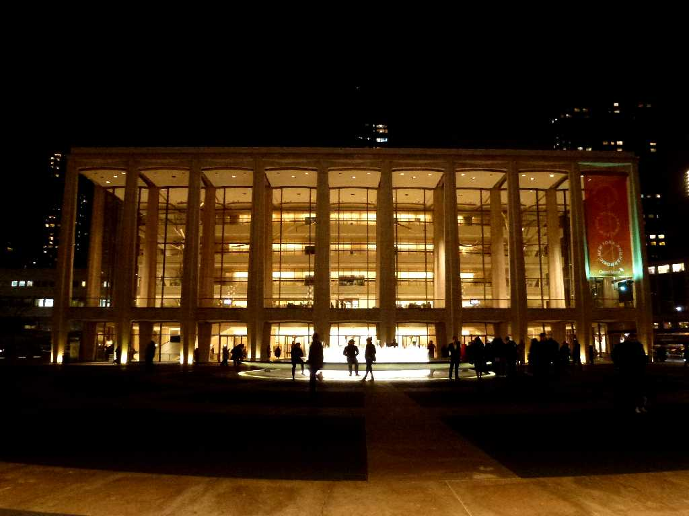
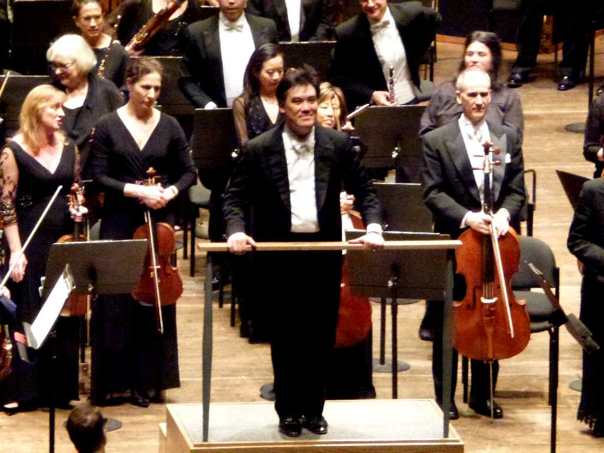

New York Philharmonic David Geffen Hall New York

February 16 2013 Alan Gilbert New York Philharmonic
厳冬のニューヨークでは母が日本人でニューヨークフィルのバイオリニストでもあるアラン・ギルバート指揮ニューヨークフィルでチャイコフスキーの交響曲第６番などを鑑賞
Brahms Concerto No.2 for Piano and Orchestra Rudolf Buchbinder Alan Gilbert New York Philharmonic Orchestra
Tchaikovsky Symphony No.6 Pathétique Alan Gilbert New York Philharmonic Orchestra